This page contains ten paragraphs typeset by the LaTeX typesetting system, converted to images by the dvipng utility. Each paragraph1 showcases a different font family and provides some background and usage instructions. All the fonts are free and open source and are included by default in most LaTeX distributions. All fonts are also available on CTAN, as well as in the TeX Font Catalogue.
1 except for this one, which is the only paragraph rendered by your browser.
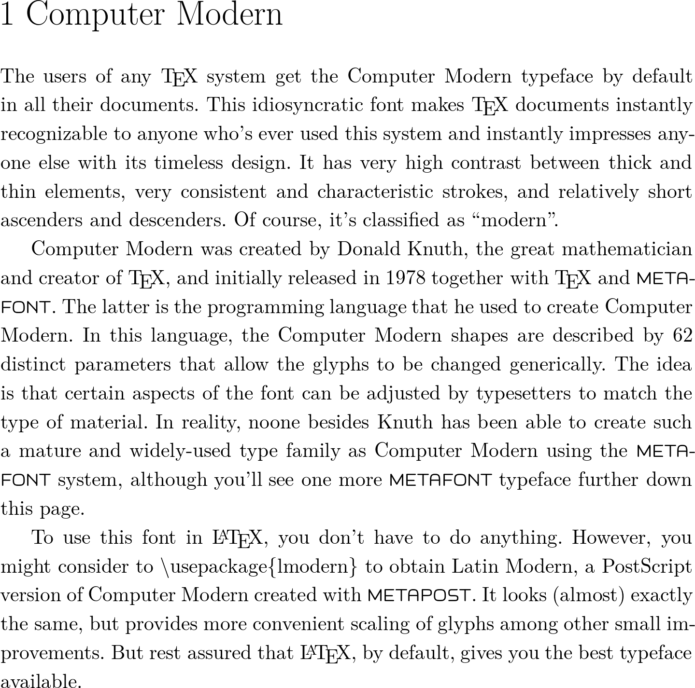
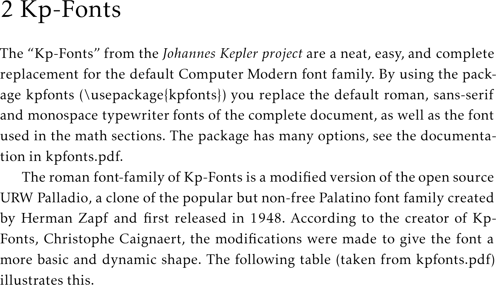
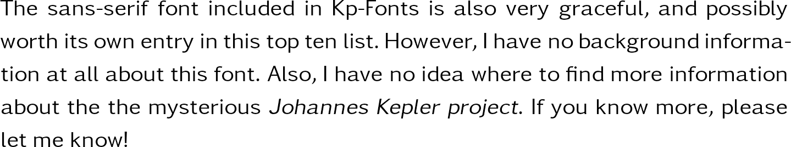
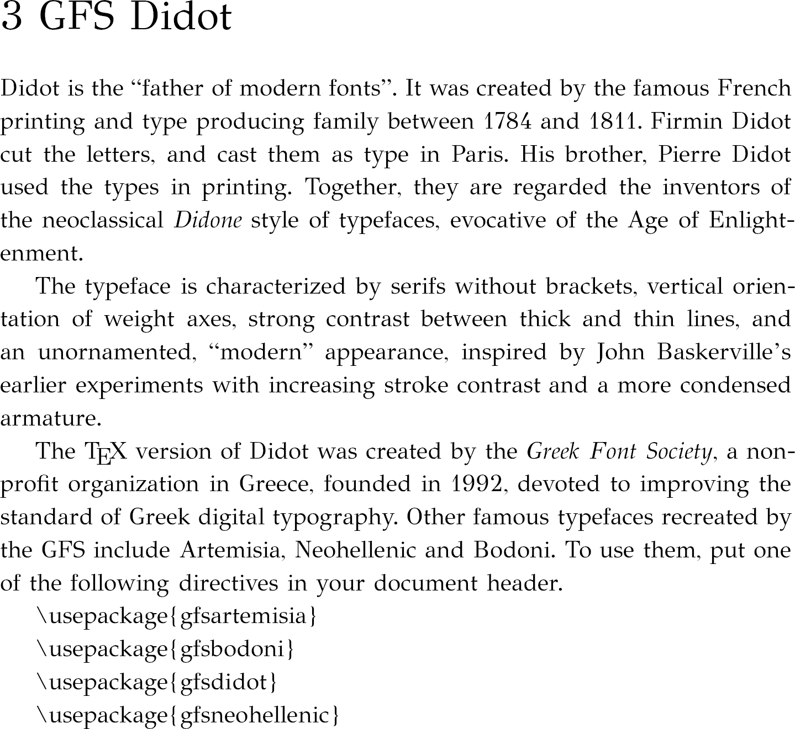
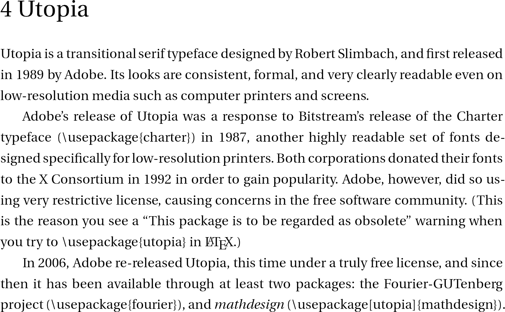
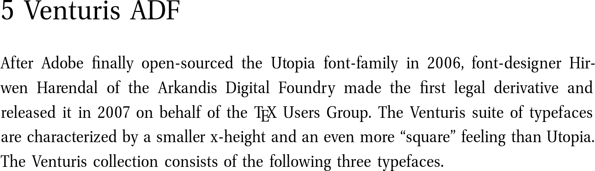
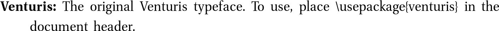
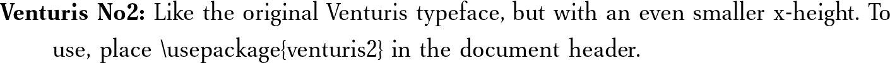
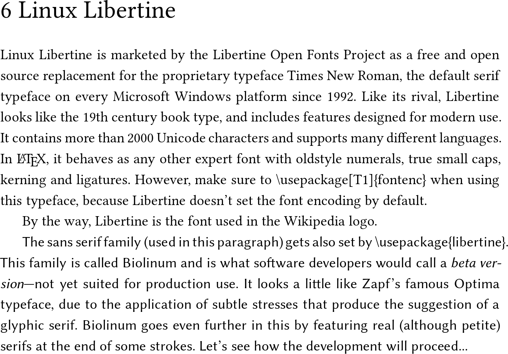
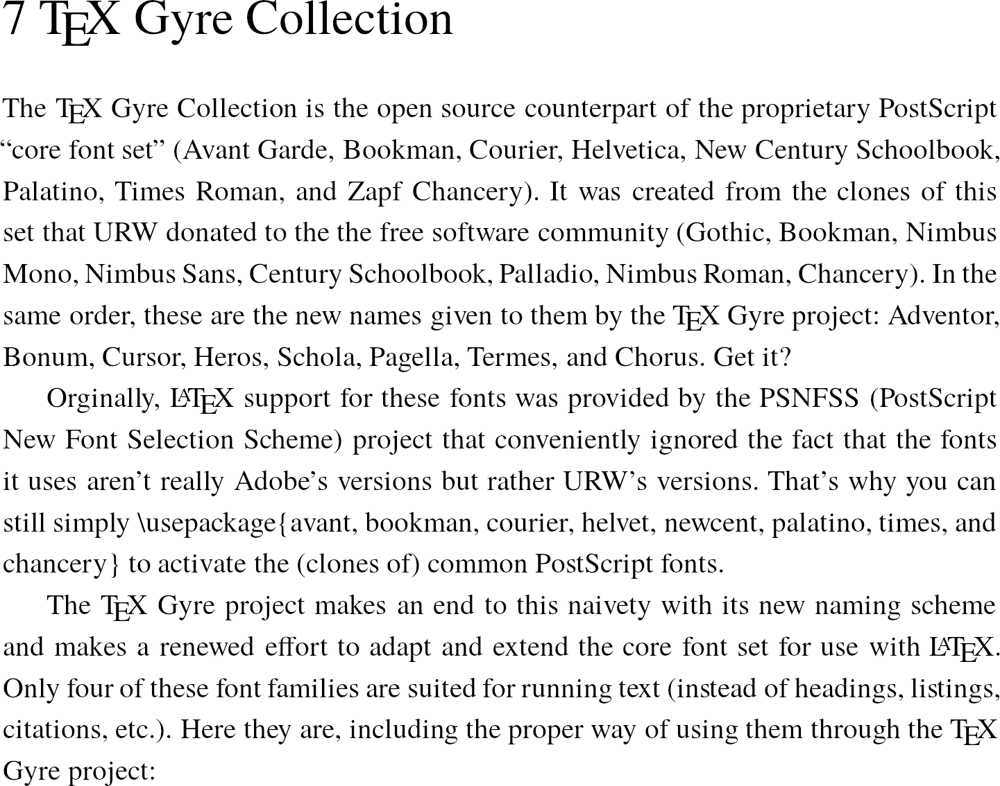
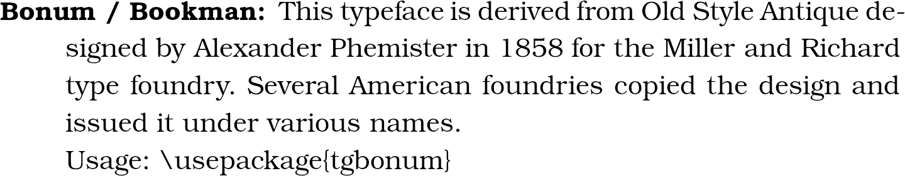
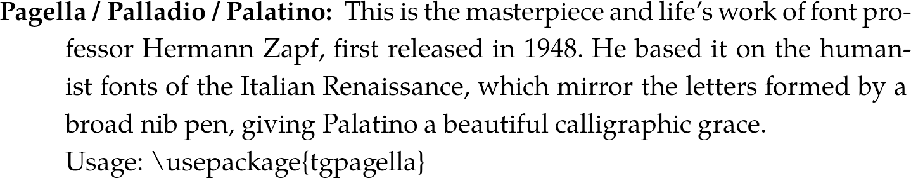
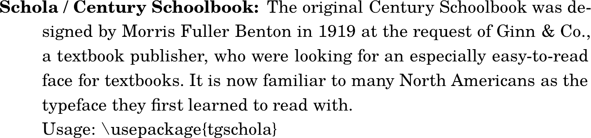
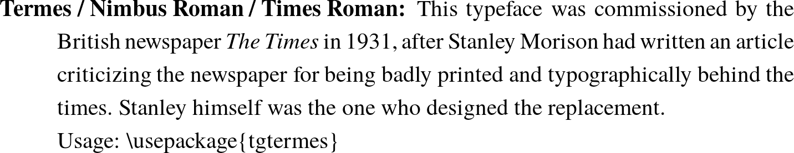
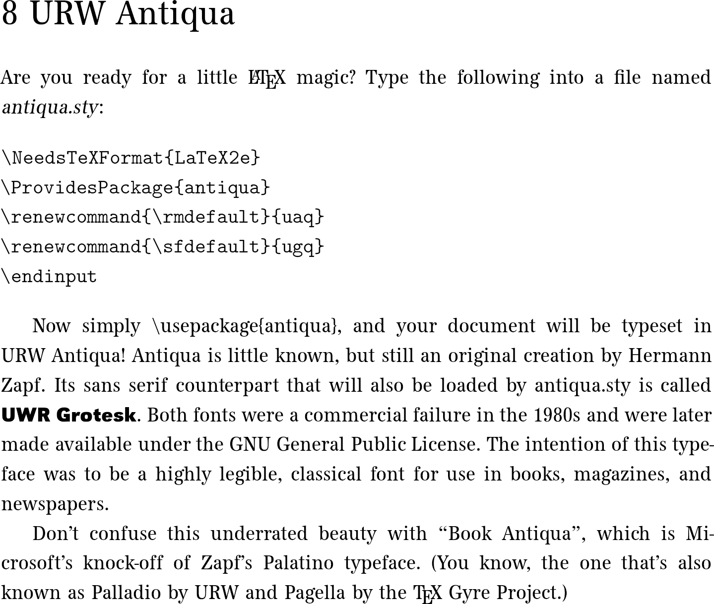
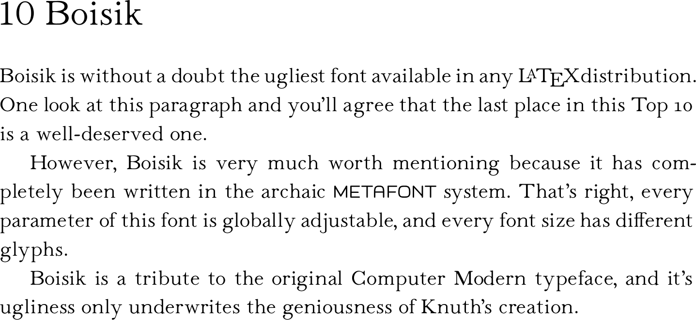